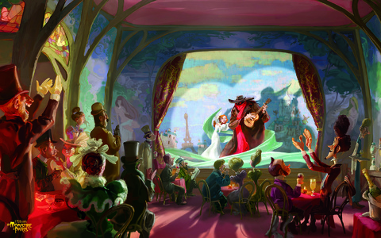
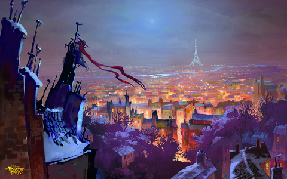
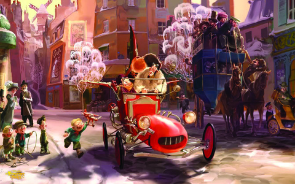

Париж. 1910 год. Эмиль работает киномехаником в кинотеатре и влюблён в свою сотрудницу Мод, которой он не осмеливается признаться в своих чувствах. Рауль — друг Эмиля, любознательный изобретатель-самоучка и курьер, разъезжающий на своей любимой усовершенствованной машине.
Однажды вечером Рауль в сопровождении Эмиля осуществляют доставку одному гениальному изобретателю, вместо которого груз получает умная обезьяна Чарли. Рауль, пользуясь случаем, попадает в лабораторию и оранжерею к учёному. Рауль изучает предметы, находящиеся в лаборатории, и находит несколько разработок изобретателя. Одна из них — смесь, благодаря которой Чарли получает голос оперной певицы, вторая — нестабильное удобрение, благодаря которому подсолнух вырастает до гигантских размеров в мгновение ока. Затем в лаборатории происходит взрыв. Пострадавших нет, но Эмиль убежден, что увидел чудовище. Через несколько дней, прочитав газеты, друзья с ужасом понимают, что монстр существует, и они несут ответственность за его появление.
Это происшествие в своих целях немедленно использует комиссар Мэйнот, который обещает спасти город от чудовища, раз уж он не смог уберечь его население от наводнения. Также комиссар рассчитывает на благосклонность певицы кабаре Люсиль, в которую влюблён, и та как раз вскоре встречает чудовище. Впрочем, она пугается его только поначалу и сразу понимает, что монстр не опасен и, кроме того, у него великолепные вокальные данные. Люсиль нарекает его Франкуром, в честь улицы, на которой произошла их первая встреча. Франкур легко научился играть на гитаре, и они начинают выступать вместе, но вскоре открывается и происхождение монстра, и причина его появления на свет.
Рауль и Эмиль решают поучаствовать в спасении огромного, но безобидного чудовища. Мэйнот устраивает безумную гонку по Парижу. Затем Франкур превращается обратно в блоху. Люсиль безутешна, но вскоре она обнаруживает, что по-прежнему слышит голос бывшего чудовища: Франкур-блоха теперь живёт в её волосах прямо около уха. Люсиль сообщает об этом Раулю, после чего он вместе с обезьяной Чарли отправляются к профессору за новой формулой, благодаря которой Франкур снова становится большим. Играет финальная песня, в своих чувствах признаются друг другу Рауль и Люсиль.



Роли озвучивали
Матье Шедид — Франкур. Блоха, ныне превратившаяся в двухметровое чудовище с красными глазами. Несмотря на ужасающую внешность, обладает мягким характером, замечательными вокальными данными и талантом музыканта-гитариста.
Ванесса Паради — Люсиль. Певица кабаре, темпераментная красавица, которую тётя желает выдать замуж не по любви, а по расчёту, но Люсиль слишком ценит свободу и искренние чувства.
Гад Эльмалех — Рауль. Красавчик, хвастун, изобретатель. С детства знаком с Люсиль, питает к ней глубокие чувства, но внешне их общение сводится к шуткам и взаимным «подколкам». Имеет имя персонажа романа "Призрак Оперы".
Франсуа Клюзе — Мэйнот. главный антагонист мультфильма. Комиссар полиции, честолюбивый карьерист, имеет планы стать мэром Парижа, поэтому тётя Люсиль, Карлотта, желает выдать за него замуж свою племянницу.
Себастьян Дежу — Эмиль. Владелец маленького кинотеатра, сам там же работает киномехаником. Застенчивый, неуклюжий, мечтательный, но всегда готовый прийти на помощь.
Людивин Санье — Мод. Билетёрша в кинотеатре Эмиля и его возлюбленная.
Мэттью Геци — Альберт. Угрюмый и хамоватый официант кабаре. Подслушивая разговор главных героев в гримерной Люсиль, узнал, что они укрывают монстра там. Пытался сдать Франкура Мэйноту. Но полиция, не обнаружив монстра, арестовывает официанта за якобы ложные показания.
Боб Балабан — Пате. Немногословный и спокойный инспектор полиции. Правая рука Мэйнота. Изначально был предан своему боссу и преследовал вместе с ним Франкура, который мешал Мэйноту занять пост мэра Парижа. Но ближе к концу мультфильма инспектор берёт сторону монстра и арестовывает Мэйнота, говоря, что в монстре Франкуре было больше человечности, чем в Мэйноте. Вероятно после этого Пате сам стал комиссаром.
Знаете ли вы, что...
В 1910 году в Париже в действительности было наводнение, в результате которого пострадали десятки людей, и был причинен серьезный материальный ущерб городу (в переводе на современные деньги в 2 миллиона евро). Серьезность наводнений парижане считают по Зуаву (статуя у моста Альма): если вода поднимется до его колен, то наводнение средней опасности, если до бедер — серьезной опасности. В 1910 году вода достигла уровня шеи Зуава (8,62 метра). Считается, что это было самое серьезное наводнение в истории Парижа.